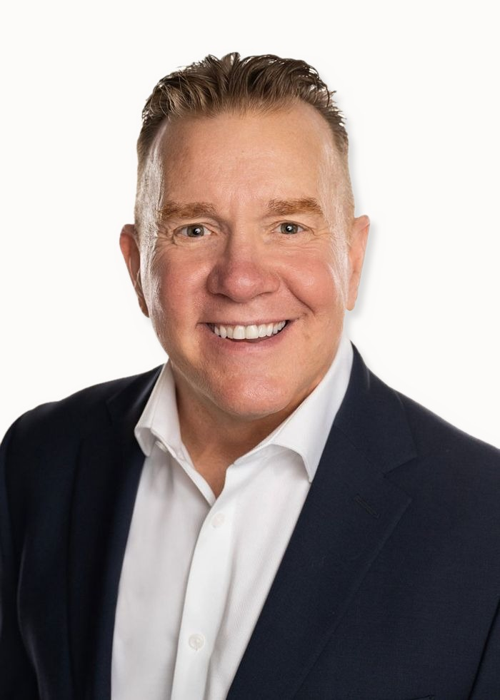
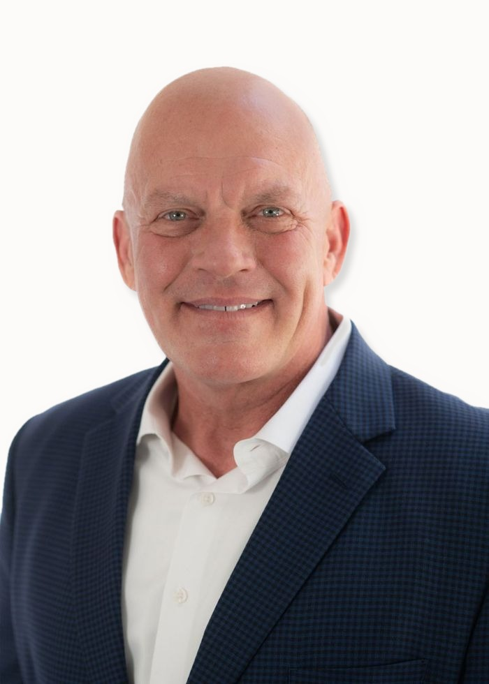
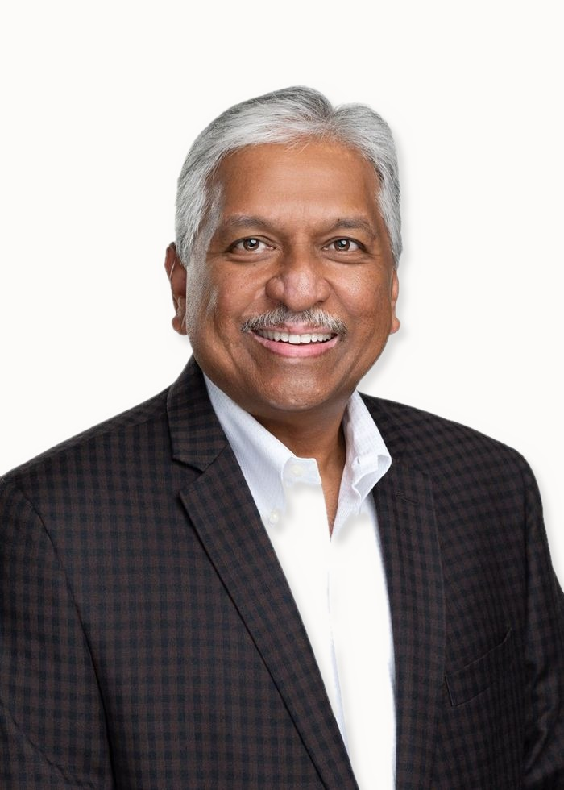

Strategic and continued talent development is the foundation of long-term business success. Victory develops the foundational solutions your organization needs most to see measurable change.
Our facilitators and executive coaches bring over a century of combined executive development experience, equipping leaders and teams with the insights and skills to elevate their performance. Our track record across a wide breadth of industries includes:
Our clients include some of the world's most respected companies and institutions, such as American Express, AIG, Prudential, Blue Cross Blue Shield, CBS Radio, GM, Turner Construction, Bridgestone Firestone, Massachusetts Institute of Technology, Sheraton Hotels & Resorts, the University of Illinois, the University of Texas, and Penn State University.
Core industry partnerships include construction, legal, real estate, healthcare, media, finance, hospitality, insurance, and higher education.
Each consultant at Victory is adept at creating a learning environment that builds camaraderie and peer mentoring within the group setting. Each coach develops trust with our clients, enabling them to develop competencies and achieve goals specific to each participant, allowing them to realize sustainable outcomes.


